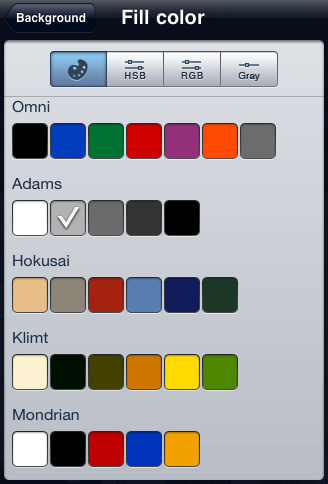

Exploring the Color Options

GraphSketcher has a plethora of color options for your perusal. Select a chit from the default palette, or tap the more colors button on the right to view palettes based on the work of some people whose choices in color have proved rather successful. Then fine tune your choices further with the HSB, RGB, and Grayscale buttons:
The HSB button controls the hue, saturation, and brightness which just happens to be what HSB stands for. You can also adjust the opacity of your selection in case you’d like something to be a little more or less see-through.
Use the RGB button to change the red, green, and blue values of a color, along with its opacity.
Use the Grayscale button to change the white value of your selection and its opacity.